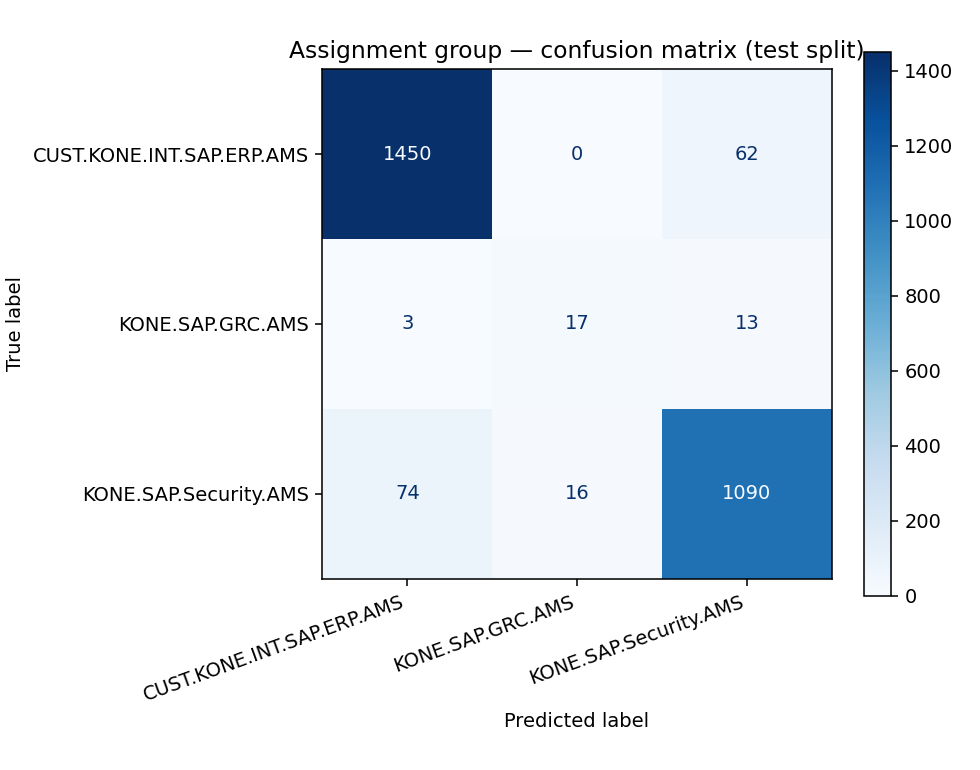
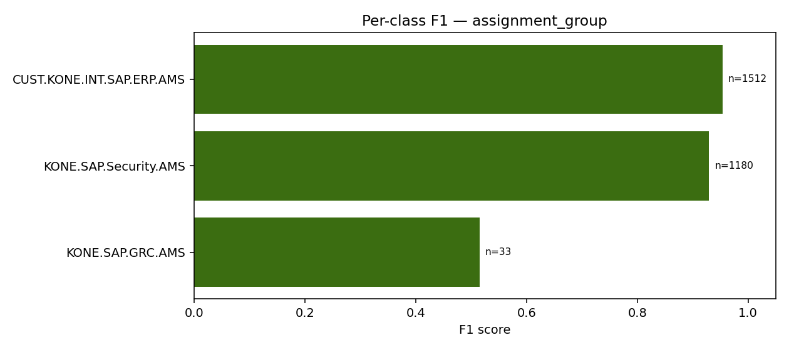
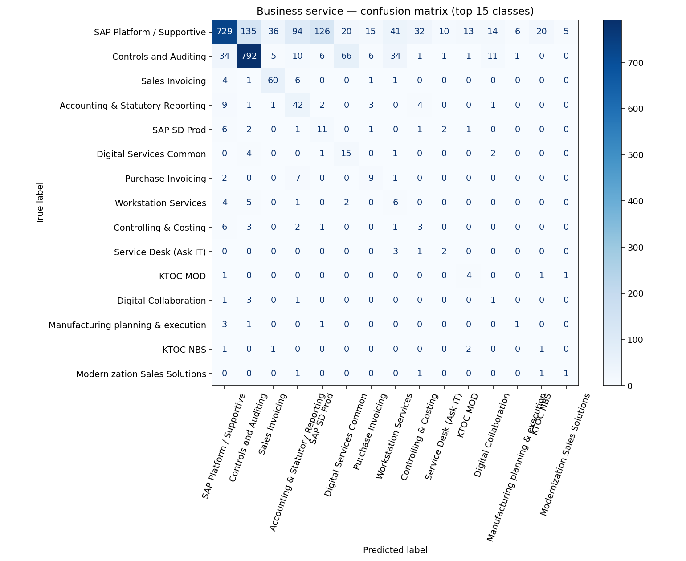
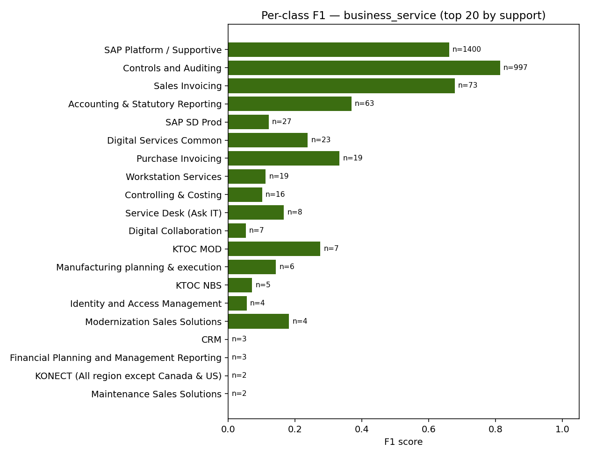
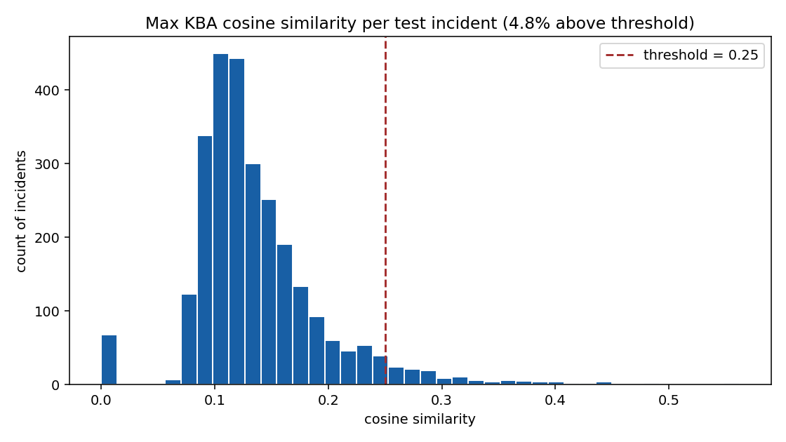
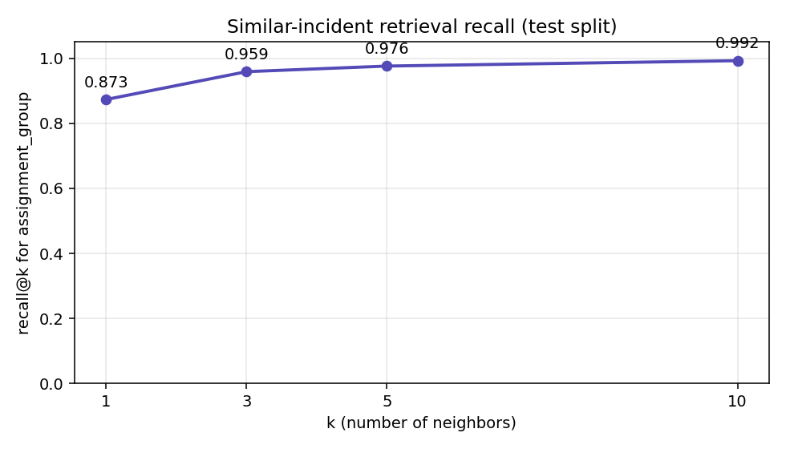

What this is
An end-to-end ServiceNow-style triage assistant built for a Microsoft GitHub Copilot hackathon. Trained on anonymized incident and KBA data, it produces four artifacts per incident: a user summary, an IT-agent triage brief, a runbook, and a draft postmortem. All outputs are grounded in retrieved evidence — there is no free-form generation, so nothing can be hallucinated.
Threshold note: KBA recommendations are only shown when cosine similarity is above 0.25.
Below that, the system explicitly says "No strong KBA match found".
Headline metrics (test split)
| task | split | n_classes | n_samples | accuracy | macro_f1 | weighted_f1 |
|---|---|---|---|---|---|---|
| assignment_group | val | 3 | 2726 | 0.9332 | 0.7786 | 0.9341 |
| assignment_group | test | 3 | 2725 | 0.9383 | 0.7997 | 0.9383 |
| business_service | val | 36 | 2714 | 0.6242 | 0.1816 | 0.6803 |
| business_service | test | 36 | 2699 | 0.6225 | 0.1406 | 0.6795 |
Macro-F1 is low for business_service because of severe class imbalance across 36 classes — see per-class F1 chart below for the honest picture.
Charts






Sample analyses
Click an incident number, then switch artifact tabs.